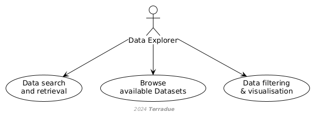

D1 · CopernicusLAC Centre Specification and Performance Requirements · Capítulo 2.1
Data Explorer
Data Explorer: busca y recupera datos desde el Portal, explora con herramientas geoespaciales y hace analítica sencilla dentro de la plataforma para evitar descargas.
pp. 81 fig.
Data Explorer users are individuals who access the CopernicusLAC platform to obtain and utilise EO data for various purposes. Their primary interactions with the system include:
- Accessing the CopernicusLAC Portal for data search and retrieval supported by the platform's catalogue and geospatial tools for data exploration.
- Use front-end services to browse available datasets and visualise data.
- Performing simple analytics using visualisation and filtering services provided by the platform.
- Conducting their analysis and processing tasks within the platform to leverage its computational capabilities and minimise data downloads.
